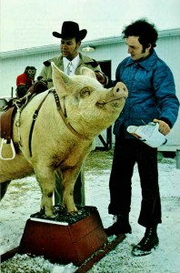

Are you free?
“Whenever government becomes destructive of these ends (life, liberty, pursuit of happiness), it is the right of the people to alter or abolish it, and to institute a new government.”
Declaration of Independence of the American Colonies, 1776
Even among people who identify themselves as ‘anarchists’ there is disagreement about what ‘anarchy’ means. This disagreement comes about because ‘anarchists’ are ‘free thinkers’ with a diversity of opinions. From their conversations, an outsider would at least conclude that they were talking about ‘freedom’ in one sense of the word or another. Thus, there are misconceptions about the meaning of ‘anarchy’. The word is used in both positive and negative contexts. Some people hold the image of an ‘anarchist’ in their mind as identical to the image of a ‘terrorist’. In today’s world of Orwellian ‘double-speak’, it is important for the ‘anarchist’ to define his beliefs carefully less he be labeled a terrorist who wants violent overthrow of government. Yet, ‘anarchy’ is the most common political philosophy when it means ‘freedom’ FROM labels, conformity, coercion, authority or domination. Most people in their right minds want the absence of these ‘negatives’. Since this essay has to at least talk about government, (the monkey in our mind) we will apply the definition first proposed for ‘anarchy’ in the 1910 Encyclopedia Britannica:
“the name given to a principle or theory of life and conduct under which society is conceived without government – harmony in such a society being obtained, not by submission to law, or by obedience to any authority, but by free agreements concluded between the various groups…”


“The basic tenet of anarchism is that hierarchical authority — be it state, church, patriarchy or economic elite — is not only unnecessary, but is inherently detrimental to the maximization of human potential. Anarchists generally believe that human beings are capable of managing their own affairs on the basis of creativity, cooperation, and mutual respect. It is believed that power is inherently corrupting, and that authorities are inevitably more concerned with self-perpetuation and increasing their own power than they are with doing what is best for their constituents. Anarchists generally maintain that ethics are a personal matter, and should be based upon concern for others and the well being of society, rather than upon laws imposed by a legal or religious authority (including revered laws such as the U.S. Constitution). Most anarchist philosophies hold that individuals are responsible for their own behavior. Paternalistic authorities foster a dehumanized mindset in which people expect elites to make decisions for them and meet their needs, rather than thinking and acting for themselves. When an authority arrogates to itself the right to overrule the most fundamental personal moral decisions, such as what is worth killing or dying for (as in military conscription or abortion), human freedom is immeasurably diminished.”
Critics of this definition would quickly point out that there is no agreement between people anywhere in the world — and there are now almost seven billion of them. How could they ever agree about anything? Those people obviously need ‘elite’ leaders who can make the decisions for them! Those who accept this definition would quickly respond to the critics that government has done a good job of ‘dividing and conquering groups of people’ and that at no time in history has this been more true than now. Looking at modern society, I could not agree more. Our so-called ‘elite’ leaders have done nothing more than create a system of government that serves their own elite interests. We, the people, are in a sickly, truncated, stunted, state of mind (some would say mind control) so that we are slaves to ‘belief systems’ — our own and those of others (how the elites want us to believe in their authority). Especially in the U.S.A., The State of Mind that governs us imposes constant negativity and mistrust while demanding obedience to an authority that has become dictatorial and power-mad. Its economic masters have conditioned us to accept a ‘dog eat dog’ world where other people can only be our competitors and where our very bodies are poisoned by the food and environment we live in. Yet, the people (or correctly, the herd of sheeple they have become) have come to ‘believe’ the shackles that bind them actually sustain them. Nothing could be further from the truth.
Mahatma Gandhi was a successful ‘anarchist’. His non-violent challenge to British imperialist government is an example of the promise of ‘anarchy’ when ‘anarchists’ cooperate. Of course, governments would have us believe that ‘anarchy’ is a recipe for chaos. They may be right when the people in question behave like a herd of sheeple ready to run here and there at the first sign of danger. It is easy to use ‘wolves in sheep’s clothing’ to frighten the masses into accepting more and more authority to protect them from their real, imagined, and manufactured fears. This ‘terrorization of the masses’ is a government PSYOPS program that has come out in the open since the 9-11 event. Understanding Orwellian double-speak, of course, the government calls it a ‘War on Terrorism’. Actually, it is a ‘War on the Consciousness’ of the masses. It is a program that has been used in the U.S.A. covertly since the country’s inception and overtly in recent times.

“We cannot be charitable when the state takes our ‘surplus’ (through an illegal tax system). We cannot share when the state steals from us to give to someone else (our government’s export of jobs to other countries). We cannot be peaceable when the state prevents us from protecting our own lives (through its use of FEMA, the Blackwater private army and local Gestapo thugs to ethnically cleanse cities). We cannot learn how to interact with each other when the ‘law’ gets in the way (where our rulers are above the same laws used to suppress us). In short, the state and any other force wielding organization cannot deliver what they promise. This much should be obvious to all. We can be more generous, sharing, and caring by being allowed to do so. Until everyone realizes that, we will never have the prosperity, peace and freedom that we could have.”
Successful ‘anarchy’ didn’t begin in the last century with that 1910 definition in the Britannia Encyclopedia. Its roots go much deeper. As a system NOT based on lawlessness but on self-governance through observance of natural laws of cooperation, its beginnings can be traced back to The Ancient Way of Taoism. The philosophy of Taoism and Anarchy share a central premise. That is: “Only, natural, voluntary action is acceptable.” I can think of a good example — the Quaker life of voluntary simplicity. I graduated from undergraduate and graduate institutions — both founded by Quakers and if there is anything in my life that I still respect, it is this simple lifestyle of living within one’s means and sharing with others. Produce and consume no more than you or your family need. Any restriction upon natural and voluntary action causes disorder and chaos. It is the result of government intervention and intrusion upon people’s natural behavior — Fascism by any other name! However, this force carries the seeds of its own destruction. These seeds have grown to ripened fruit ready to be harvested in the U.S.A.
A second premise shared by Anarchy and Taoism is that everyone has a right to defend one’s ability to live. Life is only ‘free’ to the degree that one is free to act. Government’s restriction of this right is not acting in a natural way. The self-rightnousness of our government’s recent laws restricting ‘freedom’ is a perverse morality enshrined with dictatorial power. The government wants to give itself the ‘freedom’ to be above all laws while making slaves of the rest of us to these same laws. Nowhere is this more evident than in the U.S.A.’s growth into a Fourth Reich. It is a modern-day rule of the Pharisees.
A third premise of ‘anarchism’ and ‘taoism’ is that all governmental ‘constructs’ are shabby replacements for what would happen if we the people were free to act in our own behalf. Instead, the people who join the government become its servants — they exist to perpetuate The State of Mind Control over the rest of us. Politics itself is UNNATURAL. It is a process whereby we give up our power of self-governance to an appointed ‘nobody’. The State swallows these ‘nobodies’ up and converts them to ‘corrupt’ Little Men (Petty Tyrants) who rule over the rest of us. We have no one but ourselves to blame for swallowing this ‘scam’ and allowing them to feed off the rest of us as a leech does upon its host. The very definition of the word, ‘politician’, in its original Latin is revealing: “many blood-sucking creatures”.
We MUST NOT fight back with violence. That is what the U.S.A. State of Mind wants. It is what they are conditioning we the people for. Our slaughter would be their harvest of our blood! They are certainly prepared for this. A protest march doesn’t work. Maybe a nation-wide strike would. For those who do not want to hurt other people yet become free, the last avenue left to us appears to be a Gandhian struggle. We need to follow the example of people living in Vermont who want to secede from the so-called union. As an individual, one is still free (at least in theory) to renounce one’s citizenship and leave the U.S.A. behind. If this can be done peacefully, then it is a road well worth walking down. Secession didn’t work the first time around for the states but it’s always worth another try! One can remain ‘American’ yet free oneself from government at the federal level. At least, it is one small step in the right direction. Sheeple are not bred to fight back but are just led to the slaughter by those ‘wolves’ among us in sheep’s clothing. Don’t let them decide your future.
Weapons are meant for destruction, and thus are avoided by the wise. Only as a last resort will a wise person use a deadly weapon. If peace is the true objective how can one rejoice in the victory of war? Those who rejoice in victory take pleasure in murder. Those who resort to violence will never bring peace to the world. Therefore the wise person says:
I do nothing, and people become good by themselves.

I seek peace, and people take care of their own problems.
I do not meddle in their personal lives,
and the people become prosperous.
I let go of all my desire to control them,
and the people return to their natural ways.
An interesting podcast related to this posting can be downloaded here.
Filed under: Freedom and
Leave a Reply